Reflection
Waves bounce off a surface at the same angle they strike it:

Angle In Matches Angle Out
Or in more mathematical language:
Angle of Incidence = Angle of Reflection
The Law of Reflection
Another example:
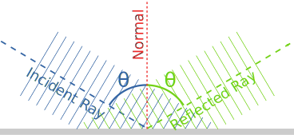
Angles are measured from the Normal.
Mirror
Here we see light bouncing off a mirror to create a "virtual image" that looks like the real thing (but reversed):
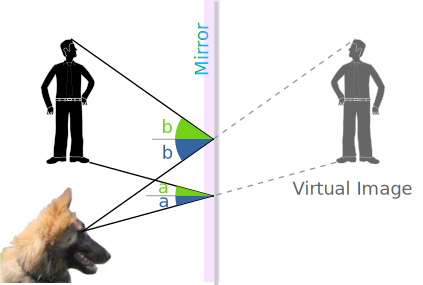
Our puppy sees someone in the mirror.
Curved Mirrors
What happens when light reflects off a curved surface? We can draw individual rays of light to find out!
Here is how to work out the reflection of a ray:
| 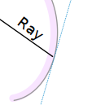 | 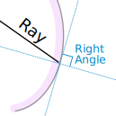 | 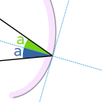 |
| Where the ray hits draw a line flat against the curve (called a tangent line) |
The normal line is at right angles to that tangent line |
Angle in matches angle out either side of the normal line |
And we get this:
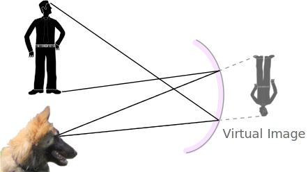
Our puppy sees an upside down reflection!
Just like the inside of this spoon:
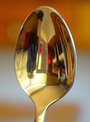
And what about this wonderful shape:
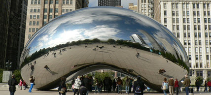
Cloud Gate in Chicago
Parabola
The parabola is a special curved shape that takes any ray coming directly in and sends it to a single "focus" point:
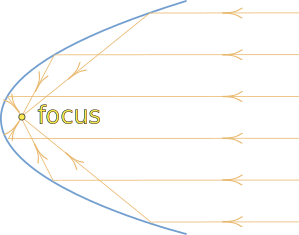
This is useful for telescopes. They can have a large parabolic collection area that sends the radiation to one small detector.
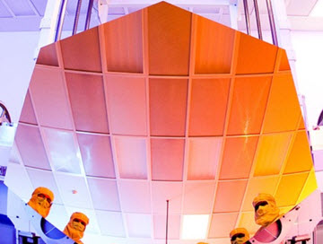
Technicians stand in front of one segment of the James Webb Telescope's
"segmented parabolic reflector"
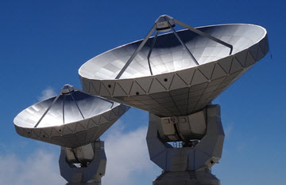
Incoming radio waves get sent to the focal point for detection.
Plateau de Bore Radio Telescope
Ellipse
For an ellipse, light or sound starting at one focus point reflects to the other focus point:
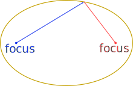
Have a play with a simple computer model of reflection inside an ellipse.
Echo
An echo is a reflection, usually of sound from a hard surface.
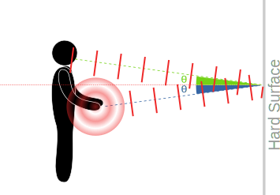
As well as hearing it directly, the sound of this clap
is also heard a short while later from the wall
Other types of waves can have echoes, such as radio waves.